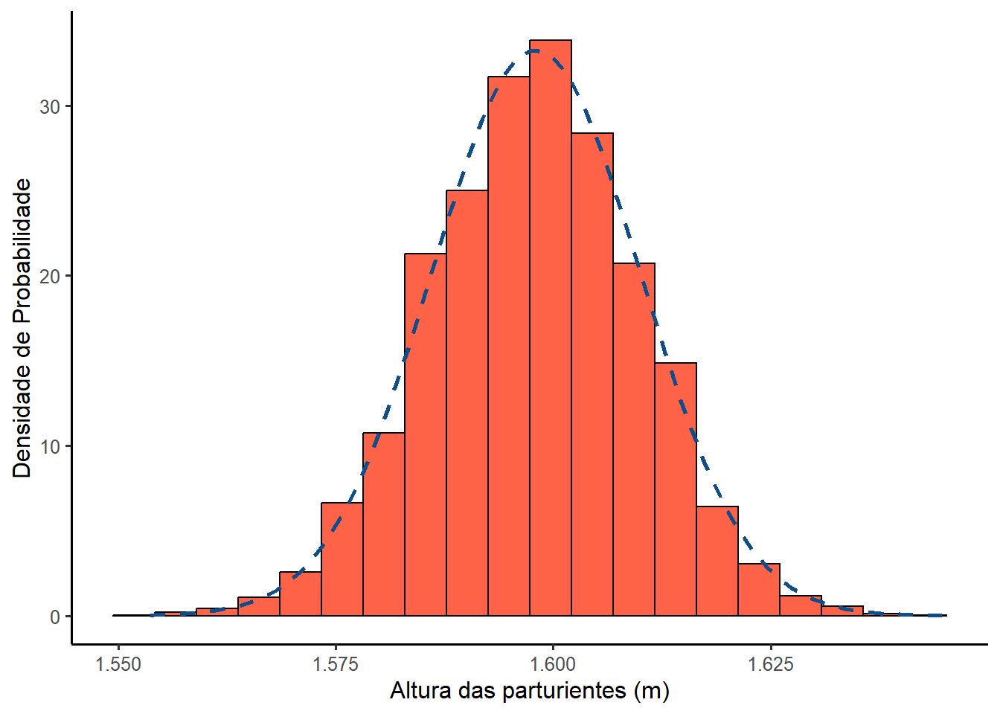

pacman::p_load(dplyr,
e1071,
ggplot2,
knitr,
readxl)11 Distribuições Amostrais
11.1 Pacotes necessários para este capítulo
11.2 Distribuições populacional e amostral
Métricas como a média, a mediana e o desvio padrão são medidas numéricas de resumo. Quando calculadas a partir de dados de uma amostra são denominadas estatísticas amostrais. Por outro lado, as mesmas medidas numéricas de resumo calculadas para dados populacionais são chamadas de parâmetros populacionais.
Um parâmetro populacional é sempre uma constante, enquanto uma estatística de amostra é sempre uma variável aleatória. Como cada variável aleatória deve possuir uma distribuição de probabilidade, cada estatística de amostra possui uma distribuição de probabilidade. A distribuição de probabilidade de uma estatística de amostra é mais comumente chamada de distribuição amostral. Os conceitos abordados neste capítulo são a base da estatística inferencial.
11.2.1 Distribuição populacional
A distribuição populacional é a distribuição de probabilidade derivada das informações sobre todos os elementos de uma população.
Para fins de raciocínio didático, o conjunto de dados de 1368 observações de puérperas e recém-nascidos da Maternidade-escola do Hospital Geral de Caxias do Sul, RS, será considerado uma população. O gráfico da Figura 10.1, da Seção 10.2.1, mostra a distribuição da altura das puérperas dessa ‘população’. Os parâmetros (\(\mu\) e \(\sigma\)) dessa “população” são:
dados <- read_excel("dados/dadosMater.xlsx") %>%
select(altura)
media = mean(dados$altura, na.rm =TRUE)
round(media, 3)[1] 1.598 dp = sd(dados$altura, na.rm =TRUE)
round(dp, 3)[1] 0.06511.2.2 Distribuição amostral
Conforme mencionado no início deste capítulo, o valor de um parâmetro da população é sempre constante. Por exemplo, para qualquer conjunto de dados populacionais, há apenas um valor para a média populacional, \(\mu\).
No entanto, não se pode dizer o mesmo sobre a média amostral. Amostras diferentes do mesmo tamanho, retiradas da mesma população, produzem valores diferentes da média amostral, \(\bar{x}\). O valor da média amostral, para qualquer amostra, dependerá dos elementos incluídos nessa amostra. Em decorrência, a média amostral é uma variável aleatória. Portanto, como outras variáveis aleatórias, a média amostral possui uma distribuição de probabilidade, que é mais comumente chamada de distribuição amostral da média.
Outras estatísticas de amostra, como mediana, moda e desvio padrão, também possuem distribuições amostrais. Em geral, a distribuição de probabilidades de uma amostra é denominada de distribuição amostral.
Usar a variável altura das puérperas da Maternidade do HGCS como a população de interesse é apenas uma estratégia didática. Raramente, na vida real, é possível obter dados da população inteira. Reunir essa informação costuma ser muito custoso ou impossível. Por essa razão, a prática é selecionar apenas uma amostra da população e a usar para compreender as suas características.
A função slice_sample() do pacote dplyrextrairá uma amostra 1 de n = 30 da população. As funções mean() e sd() calcularão a média e o desvio padrão, repectivamente:
set.seed(234)
amostra1 <- dados %>%
dplyr::slice_sample(n = 30)
media1 <- mean(amostra1$altura, na.rm =TRUE)
dp1 <- sd(amostra1$altura, na.rm =TRUE)
print(c(media1, dp1))[1] 1.59266667 0.06073875Se este processo for repetido várias vezes, a cada amostra aleatória 2, serão gerados médias e desvios padrão diferentes.
set.seed(236)
amostra2 <- dados %>%
dplyr::slice_sample(n = 30)
media2 <- mean(amostra2$altura, na.rm =TRUE)
dp2 <- sd(amostra2$altura, na.rm =TRUE)
print(c(media2, dp2))[1] 1.60633333 0.06960397À medida que o número de amostras possíveis forem aumentando, elas constituem uma distribuição cuja média, média das médias, \(\bar{x}_{\bar{x}}\), é igual a média populacional, \(\mu\). Essa distribuição, no caso da média, recebe o nome de distribuição amostral das médias.
Agora, para exemplificar este conceito, serão geradas 5000 amostras e calculada a média de cada uma das amostras de n = 30 que constituirão a distribuição, mostrada no gráfico da Figura 11.1.
# extraindo 5000 amostras
amostras5000 <- rep (0, 5000)
for (i in 1:5000) {
amostra <- dados %>% dplyr::slice_sample (n = 30)
amostras5000 [i] <- mean(amostra$altura)
}Media e desvio padrão das 5000 amostras:
mu <- round (mean (amostras5000), digits = 3)
sigma <- round (sd (amostras5000), digits = 3)
print(c(mu, sigma))[1] 1.598 0.012

Se a média, \(\bar{x}_{\bar{x}}\), dessas 5000 amostras de n = 30, for comparada com a média populacional, \(\mu\), observa-se que até 3 dígitos decimais não há uma diferença. Entretanto, o desvio padrão é bem menor (0.012) que o da população (0.065).
11.3 Erros amostrais e não amostrais
Amostras diferentes selecionadas da mesma população darão resultados diferentes porque contêm elementos diferentes. Isso é evidente nas medias das amostra1 e amostra2, 1.593m e 1.606m, respectivamente, comparadas com a média da população igual a 1.598m .
erro1 <- abs(mean(amostra1$altura, na.rm =TRUE) - mean(dados$altura, na.rm =TRUE))
erro2 <- abs(mean(amostra2$altura, na.rm =TRUE) - mean(dados$altura, na.rm =TRUE))
print(c(erro1, erro2), digits = 2)[1] 0.0053 0.0084Se outras amostras forem extraídas, o resultado obtido de qualquer amostra geralmente será diferente do resultado obtido da população correspondente. A diferença entre o valor de uma estatística amostral obtida de uma amostra e o valor do parâmetro populacional correspondente, é chamado de erro amostral. Observe que essa diferença representa o erro amostral apenas se a amostra for aleatória e não houver nenhum erro não amostral. Caso contrário, apenas uma parte dessa diferença será devido ao erro amostral.
\[ erro \quad amostral = \bar{x}_{i} - \mu \]
É importante lembrar que o erro amostral ocorre devido ao acaso. Não é possível evitar o erro amostral. É possível limitar o seu valor através da seleção de uma amostra adequada. Os erros que ocorrem por outros motivos, como erros cometidos durante a coleta, registro e tabulação dos dados, são chamados de erros não amostrais. Esses erros ocorrem, em geral, por causa de erros humanos e não por acaso.
11.4 Média e desvio padrão da média
A média e o desvio padrão calculados para a distribuição amostral da média são chamados de média (\(\mu_{\bar{x}}\)) e desvio padrão (\(\sigma_{\bar{x}}\)) da média. Na verdade, a média e o desvio padrão da média são, respectivamente, a média e o desvio padrão das médias de todas as amostras do mesmo tamanho selecionadas de uma população. O desvio padrão da média é, comumente, chamado de erro padrão da média (\(\sigma_{\bar{x}}\)).
A média amostral, \(\bar{x}\), é chamada de estimador da média da população, \(\mu\). Quando o valor esperado (ou média) de uma estatística amostral é igual ao valor do parâmetro populacional correspondente, essa estatística amostral é considerada um estimador não enviesado, consistente.
Para a média amostral \(\bar{x}\), \(\mu_{\bar{x}} = \mu\). Logo, \(\bar{x}\), é um estimador imparcial de \(\mu\). Esta é uma propriedade muito importante que um estimador deve possuir. No entanto, o desvio padrão da média, \(\sigma_{\bar{x}}\), não é igual ao desvio padrão, \(\sigma\), da distribuição populacional (a menos que n = 1). O desvio padrão da média amostral é igual ao desvio padrão da população dividido pela raiz quadrada do tamanho amostral:
\[ \sigma_{\bar{x}} = \frac {\sigma}{\sqrt{n}} \]
A dispersão da distribuição amostral da média é menor do que dispersão da distribuição populacional correspondente, como mostrado acima. Em outras palavras, \(\sigma_{\bar{x}} < \sigma\). Isso é visível na fórmula do \(\sigma_{\bar{x}}\) . Quando n é maior que 1, o que geralmente é verdadeiro, o denominador em \(\frac {\sigma}{\sqrt{n}}\) é maior que 1. Desta forma, \(\sigma_{\bar{x}}\) é menor que \(\sigma\). O desvio padrão da distribuição amostral da média diminui à medida que o tamanho amostral aumenta.
Sempre que o n for grande, em geral > 30 (1), pode ser assumido que a distribuição será uma curva normal e que o desvio padrão da amostra (s) é um estimador não enviesado do desvio padrão populacional (\(\sigma\)). Então, o erro padrão da média (\(\sigma_{\bar{x}}\)) pode ser estimado pelo \(EP_{\bar{x}}\):
\[ EP_{\bar{x}} = \frac {s}{\sqrt{n}} \]
11.5 Teorema do Limite Central (TCL)
Na maioria das vezes, a população da qual as amostras são extraídas não é normalmente distribuída. Em tais casos, a forma da distribuição amostral de X é inferida de um teorema muito importante chamado teorema do limite central. De acordo com este teorema para um grande tamanho de amostra (em geral, acima de 30), a distribuição amostral da média é aproximadamente normal, independentemente da forma da distribuição da população (1). Esta aproximação tornar-se-á mais acurada à medida que aumenta o tamanho amostral:
- a média da distribuição amostral, \(\mu_{\bar{x}}\), é igual a média populacional, \(\mu\);
- desvio padrão da distribuição amostral, \(\sigma_{\bar{x}}\), é igual a \(\frac {\sigma}{\sqrt{n}}\);
- o erro padrão da média, \(\sigma_{\bar{x}}\), é sempre menor (Figura 11.2) que o desvio padrão populacional, \(\sigma\).

11.5.1 Exemplo com uma variável assimétrica
Como exemplo, será explorada a variável renda, do conjunto de dados dadosMater.xlsx, que representa a renda familiar em salários mínimos (sm). Como foi feito anteriormente, suponha que essa variável seja a “população” de estudo. Ela tem as seguintes medidas resumidoras e de assimetria:
dados <- readxl::read_excel("dados/dadosMater.xlsx")
resumo <- dados %>%
select (renda) %>%
dplyr::summarise (media.sm = mean (dados$renda, na.rm = TRUE),
dp.sm = sd(dados$renda, na.rm = TRUE),
mediana.sm = median(dados$renda, na.rm = TRUE),
assimetria = e1071::skewness(dados$renda),
curtose = e1071::kurtosis(dados$renda))
resumo# A tibble: 1 × 5
media.sm dp.sm mediana.sm assimetria curtose
<dbl> <dbl> <dbl> <dbl> <dbl>
1 2.22 1.23 1.92 2.22 8.21O desvio padrão é grande em relação à média, com um coeficiente de variação de 55.1% e uma mediana < média. Estas métricas junto com os coeficientes de assimetria e curtose apontam para a assimetria positiva da variável renda. O gráfico da Figura 11.3 confirma esta afirmação:

Os valores da média e do desvio padrão calculados para a distribuição de probabilidade dessa população fornecem os valores dos parâmetros populacionais \(\mu\) e \(\sigma\). Esses valores são \(\mu\) =2.22 sm 3 e \(\sigma\) =1.23 sm.
Se extrairmos múltiplas amostras dessa população, observa-se a modificação do formato da distribuição à medida que aumenta o tamanho amostral, se aproximando progressivamente do modelo normal, com um número grande de amostras.
Extração de múltiplas amostras(1000)
amostras1000 <- rep (0, 1000)
for (i in 1:1000) {
amostra.sm <- sample (dados$renda, 30)
amostras1000 [i] <- mean(amostra.sm)
}Media e desvio padrão das 1000 amostras
mu <- round (mean (amostras1000), digits = 3)
sigma <- round (sd (amostras1000), digits = 3)
md <- round (median(amostras1000), digits = 3)
print(c(mu, sigma, md))[1] 2.231 0.236 2.224Assimetria e curtose
b1 <- e1071::skewness(amostras1000)
b2 <- e1071::kurtosis(amostras1000)
print(c(b1, b2))[1] 0.4357889 0.2241975
Ou seja, extraindo-se 1000 amostras de n = 30 e calculando as mesmas métricas anteriores, observa-se que, embora a distribuição populacional original seja assimétrica, a distribuição amostral da média se aproxima bastante da distribuição gaussiana (Figura 11.4).
Importância do Teorema do Limite Central
O TCL é um dos pilares da inferência estatística. Entender a sua importância é como destrancar a porta para aplicar testes, construir intervalos de confiança e fazer previsões com segurança, mesmo quando os dados parecem confusos.
O TCL afirma que:
A distribuição das médias amostrais tende a ser normal, mesmo que a população original não seja, desde que o tamanho da amostra seja suficientemente grande.
11.6 Proporções populacional e amostral
O conceito de proporção é o mesmo que o conceito de frequência relativa e o conceito de probabilidade de sucesso em um experimento binomial, discutidos anteriormente, na distribuição binomial.
A frequência relativa de uma categoria ou classe dá a proporção da amostra ou população que pertence a essa categoria ou classe. Da mesma forma, a probabilidade de sucesso em um experimento binomial representa a proporção da amostra ou população que possui uma determinada característica.
A proporção populacional, representada por p, é obtida considerando a razão entre o número de elementos em uma população com uma característica específica e o número total de elementos na população. A proporção amostral, denotada por \(\hat{p}\) (pronuncia-se p-chapéu), fornece uma proporção semelhante para uma amostra.
\[ p = \frac{X}{N} \quad e \quad \hat{p}= \frac{x}{n} \] onde,
- N \(\to\) número total de elementos em uma população
- n \(\to\) número total de elementos em uma amostra
- X \(\to\) número de elementos na população que possui determinada característica
- x \(\to\) número de elementos na amostra que possui determinada característica
Como no caso da média, a diferença entre a proporção amostral e a proporção populacional correspondente, determina o erro amostral, assumindo que a amostra é aleatória e nenhum erro não amostral foi cometido. Ou seja,
\[ erro \quad amostral = \hat{p} - p \]
A distribuição amostral de uma proporção é a distribuição das proporções de todas as amostras possíveis de tamanho n retiradas de uma população.
De acordo com o Teorema Central do Limite, para amostras suficientemente grandes, a distribuição de \(\hat{p}\) se aproxima de uma distribuição normal, mesmo que os dados originais sejam binomiais (sucesso/fracasso), desde que: \(np \geq 5\) e \(n(1 - p) \geq 5\).
Assim,
\[E(\hat{p})=\mu_\hat{p}\]
\[Var(\hat{p})=\sigma^2_\hat{p}=\frac{\hat{p}(1-\hat{p})}{n}\] Logo,
\[E(\hat{p})=\sqrt{\frac{\hat{p}(1-\hat{p})}{n}}\]
Dessa forma, a distribuição amostral de \(\hat{p}\) será:
\[ \hat{p} \sim N(\hat{p}, \frac{\hat{p}(1-\hat{p})}{n}) \]
Quando não conhecemos a proporção populacional p, pode-se usar \(\hat{p}\) como estimativa dessa proporção, desde que as condições acima sejam satisfeitas.
Dessa forma, pode-se calcular probabilidades aproximadas por uma distribuição normal com média \(μ = n \times p\) e \(σ = \sqrt{(n×p(1-p))}\) (veja também Seção 9.8.2).
Considerando a “população”, usada neste capítulo, o conjunto de dados dadosMater.xlsx, será verificado a proporção de mulheres fumantes. Inicialmente, a variável fumo, que está como variável numérica, será transformada em fator:
dados <- read_excel("dados/dadosMater.xlsx") %>%
select(fumo) %>%
mutate(fumo = factor(fumo,
levels = c(1,2),
labels = c("Fumante", "Não fumante")))A proporção de fumantes, frequência relativa (fr) é:
fumo <- with(dados, table(fumo))
fr.fumo <- prop.table(fumo)
fr.fumofumo
Fumante Não fumante
0.2200292 0.7799708 A saída retorna que a proporção de fumantes entre as mulheres desse arquivo é 0.22. Esta será considerada a proporção p da ‘população’. Agora, imagine que esse resultado fosse desconhecido. Então, para saber a qual a proporção de fumantes dessa ‘população’, seria necessário extrair uma amostra adequada. Foi selecionada uma amostra de n = 100 da ‘população’ alvo:
set.seed(134)
amostra.fumo <- dados %>% dplyr::slice_sample(n = 100)Usando a amostra.fumo, calcula-se a proporção de fumantes:
tabagismo <- with(amostra.fumo, table(fumo))
fr <- prop.table(tabagismo)
fp <- fr*100
tab.fumo <- cbind(n = tabagismo,
fr = round(fr, 2),
fp = round(fp, 2))
tab.fumo n fr fp
Fumante 20 0.2 20
Não fumante 80 0.8 80A proporção de uma amostra é uma variável aleatória: varia de amostra para amostra de uma forma que não pode ser prevista com certeza. O Teorema Central do Limite se aplica em proporções. À medida que novas amostras forem extraídas, o valor da proporção amostral \(\hat{p}\) se aproxima da proporção populacional p. Na “população” p = 0,22; na amostra de n = 100, \(\hat{p}\) = 0.2. Para amostras grandes, a proporção amostral tem distribuição aproximadamente normal com as seguinte características mencionadas acima em relação a \(\mu_\hat{p}\) e \(\sigma_\hat{p}\).
Como verificar se uma amostra é grande?
Uma amostra é grande se o intervalo
\[ [\hat{p}-3 \times \sigma_\hat{p} , \quad \hat{p}-3 \times \sigma_\hat{p}] \]
estiver totalmente dentro do intervalo [0,1].
Na prática, p não é conhecido, portanto, \(\sigma_\hat{p}\) também não é. Nesse caso, para verificar se a amostra é suficientemente grande, substitui-se o valor de p pelo valor conhecido de \(\hat{p}\). Isso significa verificar se o intervalo
\[ \hat{p}-3\times\sqrt{\frac{\hat{p}(1-\hat{p})}{n}},\quad \hat{p}+3\times\sqrt{\frac{\hat{p}(1-\hat{p})}{n}} \]
encontra-se totalmente dentro do intervalo [0,1].
Transportando os dados da amostra de gestantes, para a fórmula e usando o R para o cálculo, tem-se:
p.chapeu <- tab.fumo[1,2]
n <- tab.fumo[1,1] + tab.fumo[2,1]
li <- p.chapeu - 3*sqrt((p.chapeu*(1-p.chapeu))/n)
ls <- p.chapeu + 3*sqrt((p.chapeu*(1-p.chapeu))/n)
print(c(li, ls), digits = 3)[1] 0.08 0.32Como os limites ficam no intervalo [0, 1], chega-se à conclusão de que a amostra de n = 100 é aceitável para estimar a proporção populacional.
Exercício
Uma amostra com tamanho n = 40 é suficiente?
Resposta:
n = 40
li <- p.chapeu - 3*sqrt((p.chapeu*(1-p.chapeu))/n)
ls <- p.chapeu + 3*sqrt((p.chapeu*(1-p.chapeu))/n)
print(c(li, ls), digits = 3)[1] 0.0103 0.3897Sim, é aceitável uma amostra de n = 40.
Para que a cada nova amostragem retorne o mesmo conjunto de dados, é usado a função
set.seed()(veja Seção 9.7.2.4)↩︎Observe que o número da “semente” foi modificado para 236. Poderia ser qualquer outro número, isto garante que o sorteio seja diferente, mas ainda reprodutível.↩︎
Salários mínimos↩︎